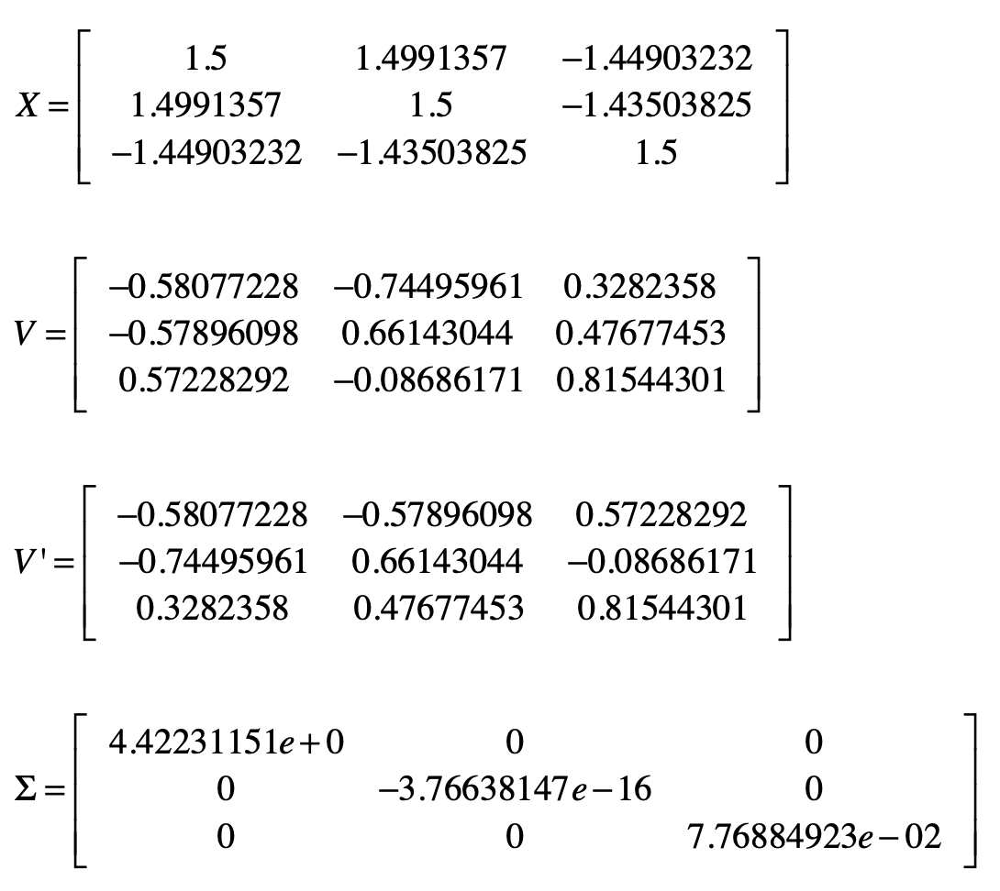
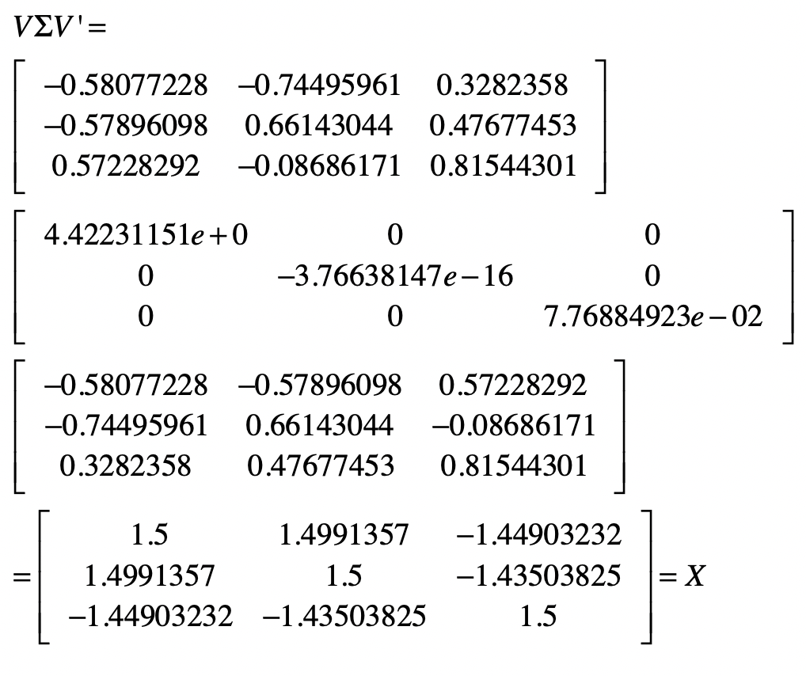
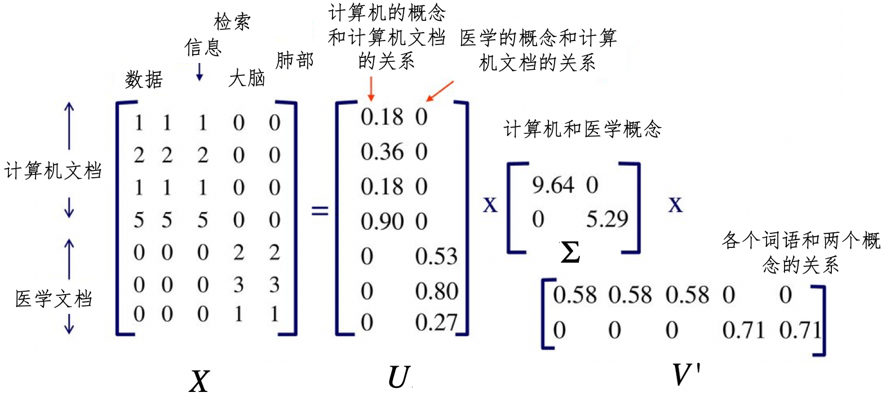

- 01 二进制：不了解计算机的源头，你学什么编程.md
- 02 余数：原来取余操作本身就是个哈希函数.md
- 03 迭代法：不用编程语言的自带函数，你会如何计算平方根？.md
- 04 数学归纳法：如何用数学归纳提升代码的运行效率？.md
- 05 递归（上）：泛化数学归纳，如何将复杂问题简单化？.md
- 06 递归（下）：分而治之，从归并排序到MapReduce.md
- 07 排列：如何让计算机学会“田忌赛马”？.md
- 08 组合：如何让计算机安排世界杯的赛程？.md
- 09 动态规划（上）：如何实现基于编辑距离的查询推荐？.md
- 10 动态规划（下）：如何求得状态转移方程并进行编程实现？.md
- 11 树的深度优先搜索（上）：如何才能高效率地查字典？.md
- 12 树的深度优先搜索（下）：如何才能高效率地查字典？.md
- 13 树的广度优先搜索（上）：人际关系的六度理论是真的吗？.md
- 14 树的广度优先搜索（下）：为什么双向广度优先搜索的效率更高？.md
- 15 从树到图：如何让计算机学会看地图？.md
- 16 时间和空间复杂度（上）：优化性能是否只是“纸上谈兵”？.md
- 17 时间和空间复杂度（下）：如何使用六个法则进行复杂度分析？.md
- 18 总结课：数据结构、编程语句和基础算法体现了哪些数学思想？.md
- 19 概率和统计：编程为什么需要概率和统计？.md
- 20 概率基础（上）：一篇文章帮你理解随机变量、概率分布和期望值.md
- 21 概率基础（下）：联合概率、条件概率和贝叶斯法则，这些概率公式究竟能做什么？.md
- 22 朴素贝叶斯：如何让计算机学会自动分类？.md
- 23 文本分类：如何区分特定类型的新闻？.md
- 24 语言模型：如何使用链式法则和马尔科夫假设简化概率模型？.md
- 25 马尔科夫模型：从PageRank到语音识别，背后是什么模型在支撑？.md
- 26 信息熵：如何通过几个问题，测出你对应的武侠人物？.md
- 27 决策树：信息增益、增益比率和基尼指数的运用.md
- 28 熵、信息增益和卡方：如何寻找关键特征？.md
- 29 归一化和标准化：各种特征如何综合才是最合理的？.md
- 30 统计意义（上）：如何通过显著性检验，判断你的A_B测试结果是不是巧合？.md
- 31 统计意义（下）：如何通过显著性检验，判断你的A_B测试结果是不是巧合？.md
- 32 概率统计篇答疑和总结：为什么会有欠拟合和过拟合？.md
- 33 线性代数：线性代数到底都讲了些什么？.md
- 34 向量空间模型：如何让计算机理解现实事物之间的关系？.md
- 35 文本检索：如何让计算机处理自然语言？.md
- 36 文本聚类：如何过滤冗余的新闻？.md
- 37 矩阵（上）：如何使用矩阵操作进行PageRank计算？.md
- 38 矩阵（下）：如何使用矩阵操作进行协同过滤推荐？.md
- 39 线性回归（上）：如何使用高斯消元求解线性方程组？.md
- 40 线性回归（中）：如何使用最小二乘法进行直线拟合？.md
- 41 线性回归（下）：如何使用最小二乘法进行效果验证？.md
- 42 PCA主成分分析（上）：如何利用协方差矩阵来降维？.md
- 43 PCA主成分分析（下）：为什么要计算协方差矩阵的特征值和特征向量？.md
- 44 奇异值分解：如何挖掘潜在的语义关系？.md
- 45 线性代数篇答疑和总结：矩阵乘法的几何意义是什么？.md
- 46 缓存系统：如何通过哈希表和队列实现高效访问？.md
- 47 搜索引擎（上）：如何通过倒排索引和向量空间模型，打造一个简单的搜索引擎？.md
- 48 搜索引擎（下）：如何通过查询的分类，让电商平台的搜索结果更相关？.md
- 49 推荐系统（上）：如何实现基于相似度的协同过滤？.md
- 50 推荐系统（下）：如何通过SVD分析用户和物品的矩阵？.md
- 51 综合应用篇答疑和总结：如何进行个性化用户画像的设计？.md
- 导读：程序员应该怎么学数学？.md
- 开篇词 作为程序员，为什么你应该学好数学？.md
- 数学专栏课外加餐（一） 我们为什么需要反码和补码？.md
- 数学专栏课外加餐（三）：程序员需要读哪些数学书？.md
- 数学专栏课外加餐（二） 位操作的三个应用实例.md
- 结束语 从数学到编程，本身就是一个很长的链条.md
44 奇异值分解：如何挖掘潜在的语义关系？
你好，我是黄申。
今天，我们来聊另一种降维的方法，SVD奇异值分解（Singular Value Decomposition）。它的核心思路和PCA不同。PCA是通过分析不同维度特征之间的协方差，找到包含最多信息量的特征向量，从而实现降维。而SVD这种方法试图通过样本矩阵本身的分解，找到一些“潜在的因素”，然后通过把原始的特征维度映射到较少的潜在因素之上，达到降维的目的。
这个方法的思想和步骤有些复杂，它的核心是矩阵分解，首先，让我们从方阵的矩阵分解开始。
方阵的特征分解
在解释方阵的分解时，我们会用到两个你可能不太熟悉的概念：方阵和酉矩阵。为了让你更顺畅的理解整个分解的过程，我先给你解释下这两个概念。
方阵（Square Matrix）是一种特殊的矩阵，它的行数和列数相等。如果一个矩阵的行数和列数都是n，那么我们把它称作n阶方阵。
如果一个矩阵和其转置矩阵相乘得到的是单位矩阵，那么它就是一个酉矩阵（Unitary Matrix）。
\(X’X=I\)
其中X’表示X的转置，I表示单位矩阵。换句话说，矩阵X为酉矩阵的充分必要条件是X的转置矩阵和X的逆矩阵相等。
\(X’=X^{-1}\)
理解这两个概念之后，让我们来观察矩阵的特征值和特征向量。前两节我们介绍了，对于一个n×n维的矩阵\(X\)，\(n\)维向量\(v\)，标量\(λ\)，如果有\(Xv=λv\)。
那么我们就说\(λ\)是\(X\)的特征值，\(v\)是\(X\)的特征向量，并对应于特征值\(λ\)。
之前我们说过特征向量表示了矩阵变化的方向，而特征值表示了变化的幅度。实际上，通过特征值和特征矩阵，我们还可以把矩阵X进行特征分解（Eigendecomposition）。这里矩阵的特征分解，是指把矩阵分解为由其特征值和特征向量表示的矩阵之积的方法。如果我们求出了矩阵\(X\)的\(k\)个特征值\(λ1，λ2，…，λn\)，以及这\(n\)个特征值所对应的特征向量\(v1，v2，…，vn\)，那么就有\(XV=VΣ\)。
其中，\(V\)是这\(n\)个特征向量所张成的n×n维矩阵，而Σ为这n个特征值为主对角线的n×n维矩阵。进一步推导，我们可以得到：
\(XVV^{-1}=VΣV^{-1}\)- \(XI=VΣV^{-1}\)- \(X=VΣV^{-1}\)
如果我们会把\(V\)的这\(n\)个特征向量进行标准化处理，那么对于每个特征向量\(V\_i\)，就有\(||V\_i||\_2=1\)，而这表示\(V’\_iV\_i=1\)，此时V的n个特征向量为标准正交基，满足\(V’V=I\) ， 也就是说V为酉矩阵，有\(V’=V^{-1}\) 。这样一来，我们就可以把特征分解表达式写作\(X=VΣV’\)。
我们以介绍PCA分析时所用的矩阵为例，验证矩阵的特征分解。当时，我们有一个：

下面我们需要证明\(X=VΣV’\)成立，我把推算的过程写在下面了。

讲到这里，相信你对矩阵的特征分解有了一定程度的认识。可是，矩阵\(X\)必须为对称方阵才能进行有实数解的特征分解。那么如果\(X\)不是方阵，那么应该如何进行矩阵的分解呢？这个时候就需要用到奇异值分解SVD了。
矩阵的奇异值分解
SVD分解和特征分解相比，在形式上是类似的。假设矩阵\(X\)是一个m×n维的矩阵，那么\(X\)的SVD为\(X=UΣV’\)。
不同的地方在于，SVD并不要求要分解的矩阵为方阵，所以这里的\(U\)和\(V’\)并不是互为逆矩阵。其中\(U\)是一个m×m维的矩阵，\(V\)是一个n×n维的矩阵。而\(Σ\)是一个m×n维的矩阵，对于\(Σ\)来说，只有主对角线之上的元素可以为非\(0\)，其他元素都是\(0\)，而主对角线上的每个元素就称为奇异值。\(U\)和\(V\)都是酉矩阵，即满足\(U’U=I,V’V=I\)。
现在问题来了，我们应该如何求出，用于SVD分解的\(U,Σ和V\)这三个矩阵呢？之所以不能使用有实数解的特征分解，是因为此时矩阵X不是对称的方阵。我们可以把\(X\)的转置\(X’\)和\(X\)做矩阵乘法，得到一个n×n维的对称方阵\(X’X\)。这个时候，我们就能对\(X’X\)这个对称方阵进行特征分解了，得到的特征值和特征向量满足\((XX’)v\_i=λ\_iv\_i\)。
这样一来，我们就得到了矩阵\(X’X\)的\(n\)个特征值和对应的\(n\)个特征向量\(v\)。通过\(X’X\)的所有特征向量构造一个n×n维的矩阵\(V\)，这就是上述SVD公式里面的\(V\)矩阵了。通常我们把\(V\)中的每个特征向量叫作\(X\)的右奇异向量。
同样的道理，如果我们把X和X’做矩阵乘法，那么会得到一个m×m维的方阵XX’。由于XX’也是方阵，因此我们同样可以对它进行特征分解，得到的特征值和特征向量满足\((XX’)u\_i=λ\_iu\_i\)。
类似地，我们得到了矩阵\(XX’\)的m个特征值和对应的m个特征向量\(u\)。通过XX’的所有特征向量构造一个m×m的矩阵\(U\)。这就是上述SVD公式里面的\(U\)矩阵了。通常，我们把U中的每个特征向量叫作X的左奇异向量。
现在，包含左右奇异向量的\(U\)和\(V\)都求解出来了，只剩下奇异值矩阵\(Σ\)了。之前我提到，\(Σ\)除了对角线上是奇异值之外，其他位置的元素都是\(0\)，所以我们只需要求出每个奇异值\(σ\)就可以了。这个解可以通过下面的公式推导求得：
\(X=UΣV’\)- \(XV=UΣV’V\)
由于\(V\)是酉矩阵，所以\(V’V=I\)，就有：
\(XV=UΣI\)- \(XV=UΣ\)- \(Xv\_i=σ\_iu\_i\)- \(σ\_i=\\frac{Xv\_i}{u\_i}\)
其中\(v\_i\)和\(u\_i\)都是列向量。一旦我们求出了每个奇异值\(σ\)，那么就能得到奇异值矩阵\(Σ\)。
通过上述几个步骤，我们就能把一个mxn维的实数矩阵，分解成\(X=UΣV’\)的形式。说到这里，你可能会疑惑，把矩阵分解成这个形式有什么用呢？实际上，在不同的应用中，这种分解表示了不同的含义。下面，我会使用潜在语义分析的案例，带你看看，在发掘语义关系的时候，SVD分解起到了怎样的关键作用。
潜在语义分析和SVD
在讲向量空间模型的时候，我解释了文档和词条所组成的矩阵。对于一个大的文档集合，我们首先要构造字典，然后根据字典构造每篇文档的向量，最后通过所有文档的向量构造矩阵。矩阵的行和列分别表示文档和词条。基于这个矩阵、向量空间中的距离、余弦夹角等度量，我们就可以进行基于相似度的信息检索或文档聚类。
不过，最简单的向量空间模型采用的是精确的词条匹配，它没有办法处理词条形态的变化、同义词、近义词等情况。我们需要使用拉丁语系的取词根（Stemming）操作，并手动建立同义词、近义词词典。这些处理方式都需要人类的语义知识，也非常依赖人工的干预。另外，有些词语并不是同义词或者近义词，但是相互之间也是有语义关系的。例如“学生”“老师”“学校”“课程”等等。
那么，我们有没有什么模型，可以自动地挖掘在语义层面的信息呢？当然，目前的计算机还没有办法真正理解人类的自然语言，它们需要通过大量的数据，来找到词语之间的关系。下面我们就来看看潜在语义分析LSA（Latent Semantic Analysis）或者叫潜在语义索引LSI（Latent Semantic Index）这种方法，是如何做到这点的。
和一般的向量空间模型有所不同，LSA通过词条和文档所组成的矩阵，发掘词和词之间的语义关系，并过滤掉原始向量空间中存在的一些“噪音”，最终提高信息检索和机器学习算法的精确度。LSA主要包括以下这些步骤。
第一步，分析文档集合，建立表示文档和词条关系的矩阵。
第二步，对文档-词条矩阵进行SVD奇异值分解。在LSA的应用场景下，分解之后所得到的奇异值σ对应了一个语义上的“概念”，而\(σ\)值的大小表示这个概念在整个文档集合中的重要程度。\(U\)中的左奇异值向量表示了每个文档和这些语义“概念”的关系强弱，\(V\)中的右奇异值向量表示每个词条和这些语义“概念”的关系强弱。所以说，SVD分解把原来的词条-文档关系，转换成了词条-语义概念-文档关系。
我画了一张图帮助你理解这个过程。

在这张图中，我们有一个7×5维的矩阵\(X\)，表示7个文档和5个单词。经过SVD分解之后，我们得到了两个主要的语义概念，一个概念描述了计算机领域，另一个概念描述了医学领域。矩阵U描述文档和这两个概念之间的关系，而矩阵\(V’\)描述了各个词语和这两个概念之间的关系。如果要对文档进行检索，我们可以使用\(U\)这个降维之后的矩阵，找到哪些文档和计算机领域相关。同样，对于聚类算法，我们也可以使用U来判断哪些文档属于同一个类。
第三步，对SVD分解后的矩阵进行降维，这个操作和PCA主成分分析的降维操作是类似的。
第四步，使用降维后的矩阵重新构建概念-文档矩阵，新矩阵中的元素不再表示词条是不是出现在文档中，而是表示某个概念是不是出现在文档中。
总的来说，LSA的分解，不仅可以帮助我们找到词条之间的语义关系，还可以降低向量空间的维度。在这个基础之上再运行其他的信息检索或者机器学习算法，就更加有效。
总结
之前介绍的PCA主成分分析，要求矩阵必须是对称的方阵，因此只适用于刻画特征之间关系的协方差矩阵。但是，有的时候我们需要挖掘的是样本和特征之间的关系，例如文档和词条。这个时候矩阵并不是对称的方阵，因此无法直接使用PCA分析。
为此，SVD奇异值分解提供了一种可行的方案。它巧妙地运用了矩阵X和自己的转置相乘，生成了两种对称的方阵，并通过这两者的特征分解，获得了SVD中的左奇异向量所组成的矩阵U和右奇异向量所组成的矩阵V，并最终推导出奇异值矩阵Σ。这样，SVD就可以对原始的数据矩阵进行分解，并运用最终的奇异向量进行降维。
我们可以把SVD运用在很多场合中，在不同的应用场景下，\(U，V\)和\(Σ\)代表了不同的含义。例如，在LSA分析中，通过对词条和文档矩阵的SVD分解，我们可以利用Σ获得代表潜在语义的一些概念。而矩阵\(U\)表示了这些概念和文档之间的关系，矩阵\(V\)表示了这些概念和单个词语之间的关系。
思考题
请使用你自己熟悉的语言实现SVD分解。（提示：如果使用Python等科学计算语言，你可以参考本节所讲述的矩阵分解步骤，也可以使用一些现成的科学计算库。）
欢迎留言和我分享，也欢迎你在留言区写下今天的学习笔记。你可以点击“请朋友读”，把今天的内容分享给你的好友，和他一起精进。
© 2019 - 2023 Liangliang Lee. Powered by gin and hexo-theme-book.